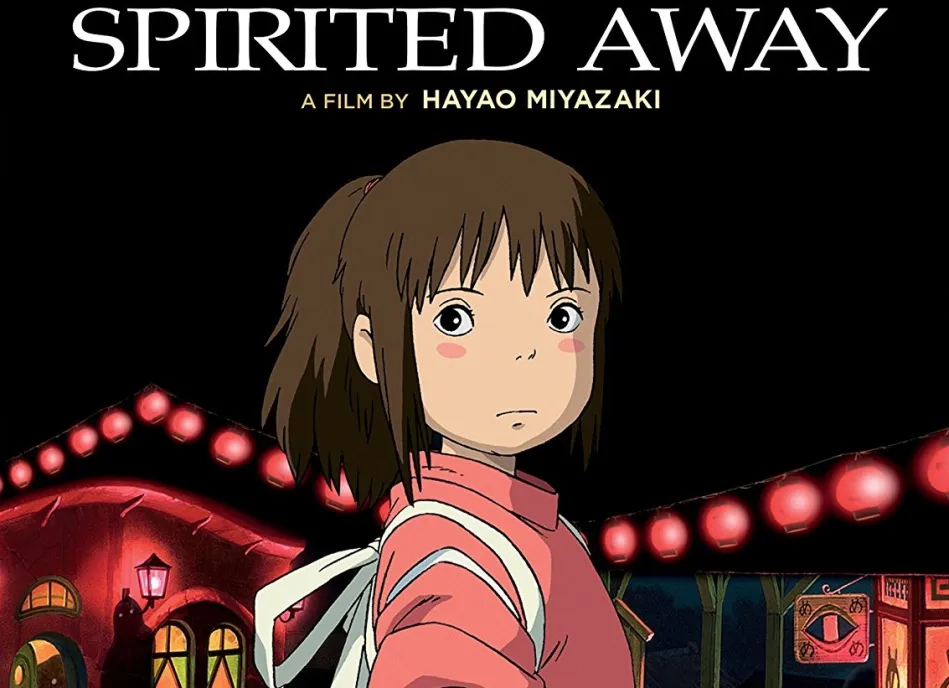

The Most Facinating Movies According To Niels
My Top 3
Forrest Gump
 Forrest Gump is a simple man with a low I.Q. but good intentions. He is running through childhood with his best and only friend Jenny. His 'mama' teaches him the ways of life and leaves him to choose his destiny. Forrest joins the army for service in Vietnam, finding new friends called Dan and Bubba, he wins medals, creates a famous shrimp fishing fleet, inspires people to jog, starts a ping-pong craze, creates the smiley, writes bumper stickers and songs, donates to people and meets the president several times. However, this is all irrelevant to Forrest who can only think of his childhood sweetheart Jenny Curran, who has messed up her life. Although in the end all he wants to prove is that anyone can love anyone.
Forrest Gump is a simple man with a low I.Q. but good intentions. He is running through childhood with his best and only friend Jenny. His 'mama' teaches him the ways of life and leaves him to choose his destiny. Forrest joins the army for service in Vietnam, finding new friends called Dan and Bubba, he wins medals, creates a famous shrimp fishing fleet, inspires people to jog, starts a ping-pong craze, creates the smiley, writes bumper stickers and songs, donates to people and meets the president several times. However, this is all irrelevant to Forrest who can only think of his childhood sweetheart Jenny Curran, who has messed up her life. Although in the end all he wants to prove is that anyone can love anyone.
Pulp Fiction
 Jules Winnfield and Vincent Vega are two hit men who are out to retrieve a suitcase stolen from their employer, mob boss Marsellus Wallace. Wallace has also asked Vincent to take his wife Mia out a few days later when Wallace himself will be out of town. Butch Coolidge is an aging boxer who is paid by Wallace to lose his fight. The lives of these seemingly unrelated people are woven together comprising of a series of funny, bizarre and uncalled-for incidents
Jules Winnfield and Vincent Vega are two hit men who are out to retrieve a suitcase stolen from their employer, mob boss Marsellus Wallace. Wallace has also asked Vincent to take his wife Mia out a few days later when Wallace himself will be out of town. Butch Coolidge is an aging boxer who is paid by Wallace to lose his fight. The lives of these seemingly unrelated people are woven together comprising of a series of funny, bizarre and uncalled-for incidents
Sperited Away

Chihiro and her parents are moving to a small Japanese town in the countryside, much to Chihiro's dismay. On the way to their new home, Chihiro's father makes a wrong turn and drives down a lonely one-lane road which dead-ends in front of a tunnel. Her parents decide to stop the car and explore the area. They go through the tunnel and find an abandoned amusement park on the other side, with its own little town. When her parents see a restaurant with great-smelling food but no staff, they decide to eat and pay later. However, Chihiro refuses to eat and decides to explore the theme park a bit more. She meets a boy named Haku who tells her that Chihiro and her parents are in danger, and they must leave immediately. She runs to the restaurant and finds that her parents have turned into pigs. In addition, the theme park turns out to be a town inhabited by demons, spirits, and evil gods. At the center of the town is a bathhouse where these creatures go to relax. The owner of the bathhouse is the evil witch Yubaba, who is intent on keeping all trespassers as captive workers, including Chihiro. Chihiro must rely on Haku to save her parents in hopes of returning to their world.